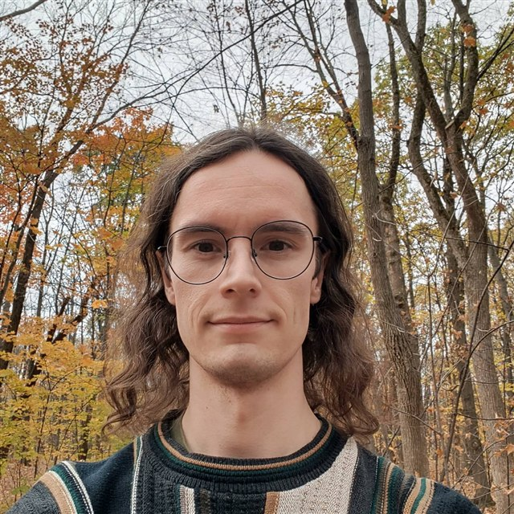

About

Jack HilliardI'm a computer vision researcher that has specialised in lighting estimation and relighting, and have since branched out to 3D vector annotations.
Currently, I'm a postdoctoral researcher for Prof. Jean-François Lalonde at the Laboratoire de Vision et Systèmes Numériques (LVSN) at Université Laval in Québec, Canada. My current research is twofold: evaluating the ability of generative image models to understand and recreate lighting, as well as automating civil engineering level vector annotations from mobile LiDAR survey scans.
Before moving to Québec I completed my PhD at the Centre for Vision, Speech and Signal Processing (CVSSP) at the University of Surrey, where I was supervised by Dr Jean-Yves Guillemaut and co-supervised by Prof. Adrian Hilton. Here I specialised in 360° HDR illumination estimation from single limited FoV LDR images, with a focus on removing the artefacts and distortions caused by using 360° equirectangular panoramas in convolutional and vision-transformer networks.
Research interests
- Illumination estimation
- High Dynamic Range (HDR) imaging and 360° panoramas generation
- Generative image models and their evaluation
- Diffusion models, Vision-Transformers and GANs for image synthesis
- Multi-Modal Large Language Models
Academic background
- 2025–2027
- Postdoctoral researcher, LVSN, Université Laval
- 2020–2025
- PhD in Computer Vision, CVSSP, University of Surrey
Thesis: Generative Models for High Dynamic Range Panorama Outpainting from a Single-View Image - 2015–2020
- MEng in Electronic Engineering, University of Surrey
News
- Nov 2026
- “Shedding Light” is published in ACM Transactions on Graphics.
- Oct 2025
- Joined the LVSN at Université Laval as a postdoctoral researcher.
- 2024
- “360U-Former” appears in the ECCV 2024 Workshops proceedings.